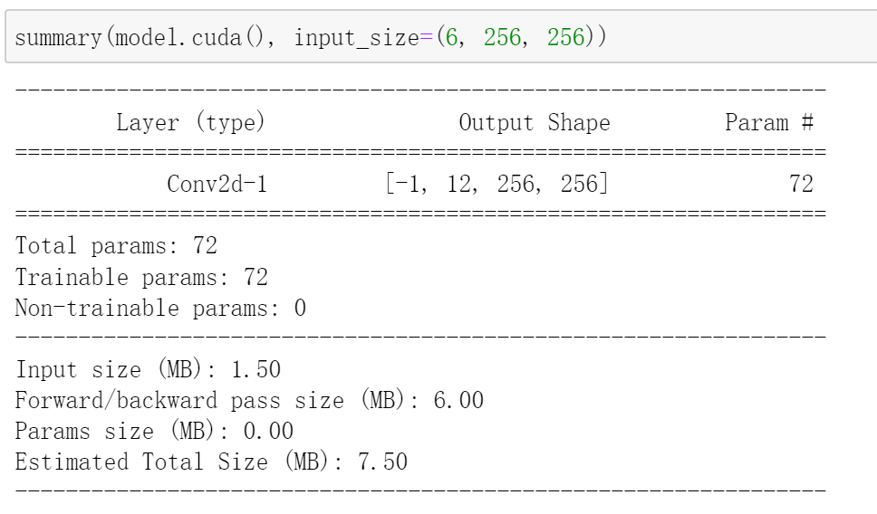

分组卷积(Group Convolution)
分组卷积将输入特征图进行分组，分别对每组的特征图进行卷积操作，得到输出的特征图，最后再将每组卷积后得到的特征图拼接在一起，就完成了整个卷积操作。
在PyTorch中，输入特征图个数与输出特征图个数需要能够被分组数整除，因为输出特征图个数需要均摊给每一组。比如输入特征图个数为X，输出特征图个数为Y，分组数为g，且g可整除X和Y，那么每一组的输入特征图个数为X/g，输出特征图个数为Y/g，总的输出特征图个数为(Y/g)*g=Y
假设输入特征图个数为6，卷积核尺寸为3*3，输出特征图个数为10，不考虑偏置项。以下操作基于本例》
普通卷积：
当分组数为1时，就是普通的卷积
1 | import torch |
查看参数量：
参数量计算方法：
1 | 1*(3*3*(6/1))*(10/1)=540 |
分组卷积：
当分组数不为1时，就是分组卷积
1 | import torch |
查看参数量：
参数量计算方法：
1 | 2 * ((3*3*(6/2))*((10/2)))=270 |
可以看到，我们分了两组，参数量也减半。
深度可分离卷积(Depthwise Separable Convolution)
深度可分离卷积包含两个步骤：逐通道卷积和逐点卷积。
假设输入特征图个数为6，卷积核尺寸为3*3，输出特征图个数为12，不考虑偏置项。以下操作基于本例：
逐通道卷积(Depthwise Convolution)
当分组卷积的分组数=输入特征图个数=输出特征图个数时，就得到了逐通道卷积：
1 | import torch |
查看参数量：
参数量计算方法：
1 | 6 * ((3*3*(6/6))*((6/6)))=54 |
逐点卷积(Pointwise Convolution)
逐点卷积就是普通的1*1卷积（分组数为1）
1 | import torch |
查看参数量：

参数量计算方法：
1 | 1 * ((1*1*(6/1))*((12/1)))=72 |
至此，逐通道卷积与逐点卷积的参数量之和为：54+72=126
深度可分离卷积可以描述为：
1 | import torch |
查看参数量：
参数量也是54+72=126
由此可见，深度可分离卷积正是逐通道卷积与逐点卷积的叠加。
普通卷积
1 | import torch |
查看参数量：
参数量计算方法：
1 | 1 * ((3*3*(6/1))*((12/1)))=648 |
看，输出特征图个数一样的前提下，普通卷积的参数量远多于深度可分离卷积。
正因为深度可分离卷积的参数量较少，使得它在轻量化网络中得到了广泛应用，有时间可以盘点下这些轻量化网络。
参考：
I'm so cute. Please give me money.


- 本文链接：http://yoursite.com/2021/05/25/%E5%88%86%E7%BB%84%E5%8D%B7%E7%A7%AF%E4%B8%8E%E6%B7%B1%E5%BA%A6%E5%8F%AF%E5%88%86%E7%A6%BB%E5%8D%B7%E7%A7%AF/
- 版权声明：本博客所有文章除特别声明外，均默认采用 许可协议。